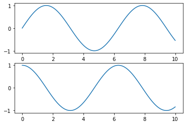

二通りのグラフ作成方法
Contents
二通りのグラフ作成方法¶
投稿日：2022年6月22日
最終更新日：2022年6月22日
matplotlibでグラフを作成するには，MATLAB形式のAPIとオブジェクト指向APIの二通りの方法がある．
実行環境
このノートブックはjupyter lab上で実行している．pythonのバージョンは以下の通り．
!python --version
Python 3.8.8
ライブラリ
使用する各ライブラリのバージョンは以下の通り．
%matplotlib inline
import matplotlib as mpl
import matplotlib.pyplot as plt
import numpy as np
print(f"Matplotlib version {mpl.__version__}")
print(f"Numpy version {np.__version__}")
Matplotlib version 3.3.4
Numpy version 1.20.1
MATLAB形式のAPI¶
MATLABでグラフを作成する時と同じようにmatplotlibを使用できる．以下のコードはグラフを縦に二つ並べるときの書き方である．これを実現するにはplt.subplot()を使用する．
x = np.linspace(0, 10, 100)
plt.figure()
plt.subplot(2, 1, 1)
plt.plot(x, np.sin(x))
plt.subplot(2, 1, 2)
plt.plot(x, np.cos(x))
plt.show()

オブジェクト指向API¶
上記のグラフと同じものをオブジェクト指向APIで作成するには，plt.subplots()で生成されるFigureオブジェクトとAxesオブジェクトを使用する．
Note
Matplotlibの公式ドキュメントによると（A note on the Object-Oriented API vs. Pyplot），オブジェクト指向APIを使用することが推奨されている．
fig, ax = plt.subplots(2)
ax[0].plot(x, np.sin(x))
ax[1].plot(x, np.cos(x))
plt.show()

参考文献